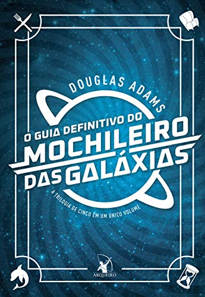

Estante de Livros
Sua Biblioteca
à um clique de distância !
Harry Potter e a Pedra Filosofal

Sipnose:
Harry Potter e a Pedra Filosofal é o primeiro dos sete livros da série de fantasia
Harry Potter, escrita por
J. K. Rowling. O livro conta a história de Harry Potter, um órfão criado pelos tios que
descobre, em seu
décimo primeiro aniversário, que é um bruxo.
Fonte: Google Books
| Data da primeira publicação: |
Autor: |
Idioma Original: |
Gêneros: |
| 26 de junho de 1997 |
J. K. Rowling |
Inglês |
Romance, Literatura infantil, Literatura fantástica, Alta fantasia |
Senhor dos Anéis: A Sociedade do Anel

Sipnose:
A Sociedade do Anel O volume inicial de O Senhor dos Anéis, lançado originalmente em julho de 1954, foi o
primeiro grande épico de fantasia moderno, conquistando milhões de leitores e se tornando o padrão de
referência para todas as outras obras do gênero até hoje. A imaginação prodigiosa de J.R.R. Tolkien e seu
conhecimento profundo das antigas mitologias da Europa permitiram que ele criasse um universo tão complexo e
convincente quanto o mundo real. A Sociedade do Anel começa no Condado, a região rural do oeste da
Terra-média onde vivem os diminutos e pacatos hobbits. Bilbo Bolseiro, um dos raros aventureiros desse povo,
cujas peripécias foram contadas em O Hobbit, resolve ir embora do Condado e deixa sua considerável herança
nas mãos de seu jovem parente Frodo.
Fonte: Google Books
| Data da primeira publicação: |
Autor: |
Idioma Original: |
Gêneros: |
| 29 de julho de 1954 |
J. R. R. Tolkien |
Inglês |
Literatura fantástica, Obra de referência |
Persy Jackson O Ladrão de Raios

Sipnose:
Primeiro volume da saga Percy Jackson e os olimpianos, O ladrão de raios esteve entre os primeiros lugares na
lista das séries mais vendidas do The New York Times. O autor conjuga lendas da mitologia grega com
aventuras no século XXI. Nelas, os deuses do Olimpo continuam vivos, ainda se apaixonam por mortais e geram
filhos metade deuses, metade humanos, como os heróis da Grécia antiga. Marcados pelo destino, eles
dificilmente passam da adolescência. Poucos conseguem descobrir sua identidade. O garoto-problema Percy
Jackson é um deles.
Fonte: Google Books
| Data da primeira publicação: |
Autor: |
Idioma Original: |
Gêneros: |
| 28 de junho de 2005 |
Rick Riordan |
Inglês |
Mitologia grega, Romance, Ficção juvenil, Literatura fantástica, Alta fantasia |
Alice no País das Maravilhas

Sipnose:
'Você poderia me dizer, por favor, qual caminho eu devo seguir a partir daqui?'
Que esta pergunta seja feita por uma garotinha perdida de casa (após ter seguido um coelho falante até sua
toca) a uma espécie de gato fantasmagórico flutuante já não causa nenhuma estranheza quando chegamos na tal
parte da história, pois como nos alertou a própria menina: 'há tanta coisa estranha acontecendo aqui que eu
já não me surpreendo com mais nada'.
Com este conto surreal e fantástico, muitas vezes sem sentido algum, noutras vezes carregado de sentido
oculto e profundo, Lewis Carroll revolucionou para sempre a literatura infantil
Fonte: Google Books
| Data da primeira publicação: |
Autor: |
Idioma Original: |
Gêneros: |
| novembro de 1865 |
Lewis Carroll |
Inglês |
Literatura infantil, Literatura fantástica, Ficção Absurdista, Fantástico |
O Guia do Mochileiro das Galáxias

Sipnose:
Considerado um dos maiores clássicos da literatura de ficção científica, O Guia do Mochileiro das Galáxias
vem encantando gerações de leitores ao redor do mundo com seu humor afiado.
Este é o primeiro título da famosa série escrita por Douglas Adams, que conta as aventuras espaciais do
inglês Arthur Dent e de seu amigo Ford Prefect.
A dupla escapa da destruição da Terra pegando carona numa nave alienígena, graças aos conhecimentos de
Prefect, um E.T. que vivia disfarçado de ator desempregado enquanto fazia pesquisa de campo para a nova
edição do Guia do Mochileiro das Galáxias, o melhor guia de viagens interplanetário.
Fonte: Google Books
| Data da primeira publicação: |
Autor: |
Idioma Original: |
Gêneros: |
| 12 de outubro de 1979 |
Douglas Adams |
Inglês |
Ficção científica, Romance, Humor, Ficção científica cômica, Ficção humorística |